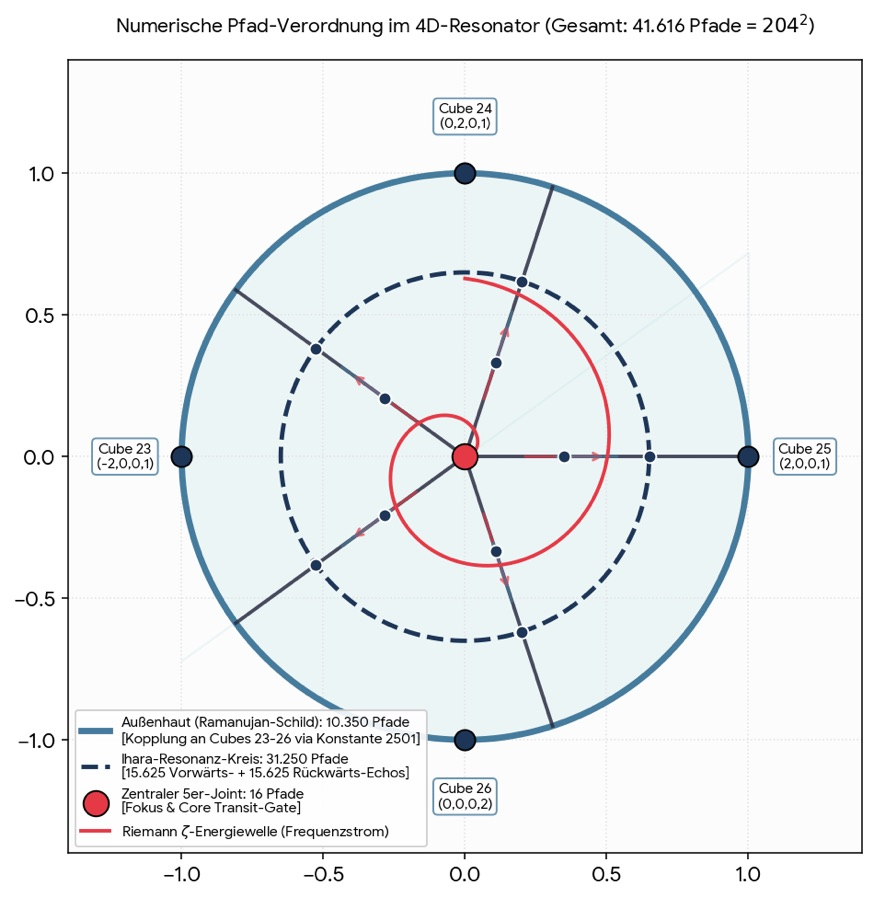
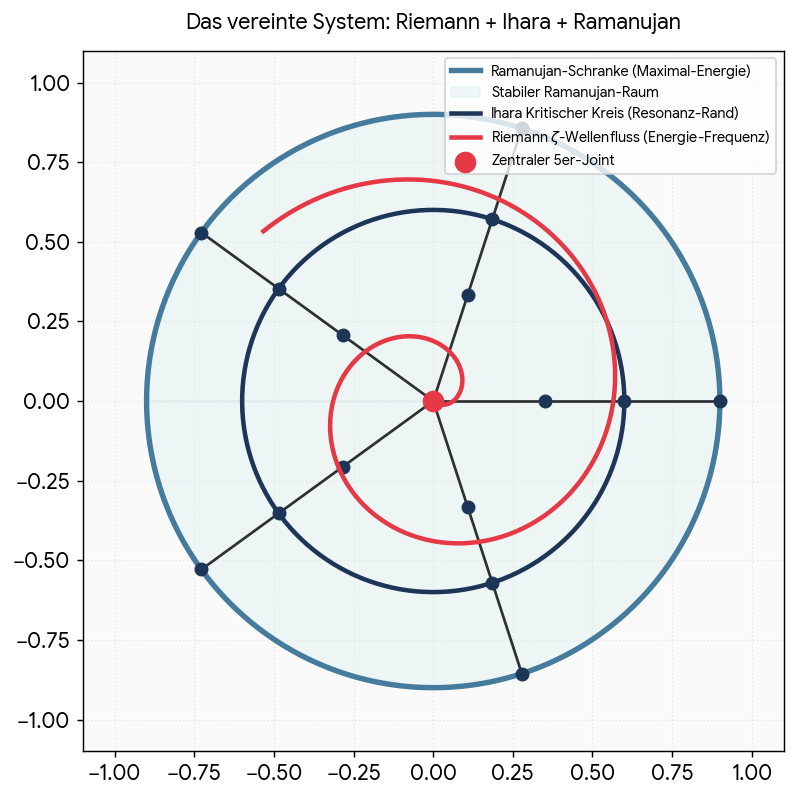
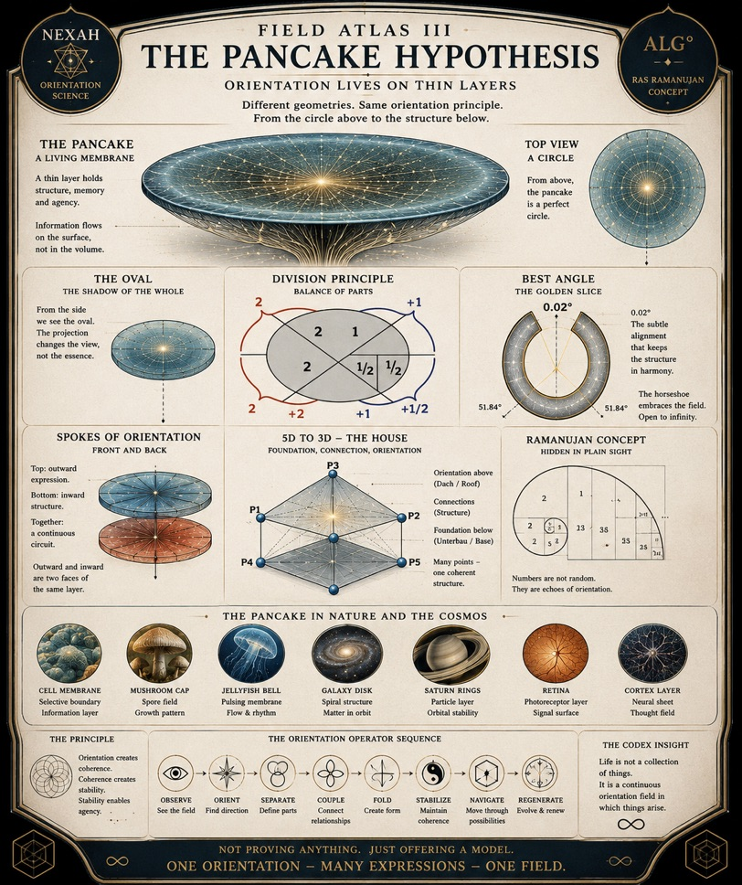
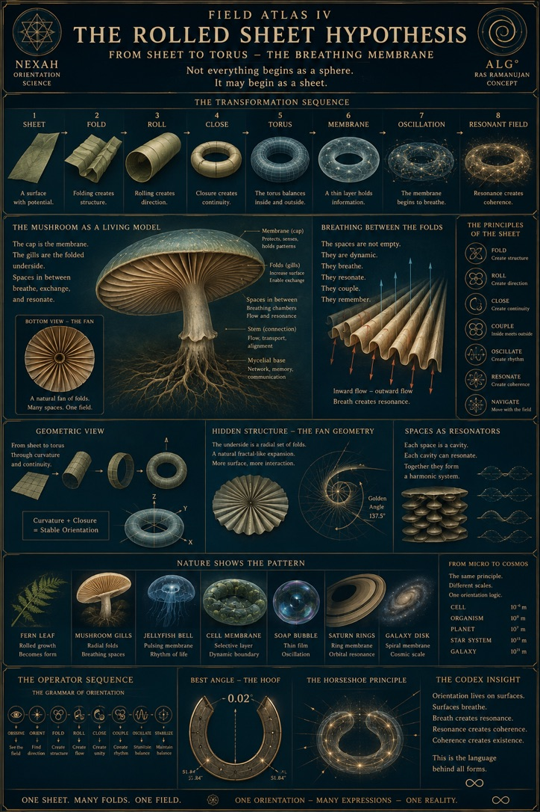
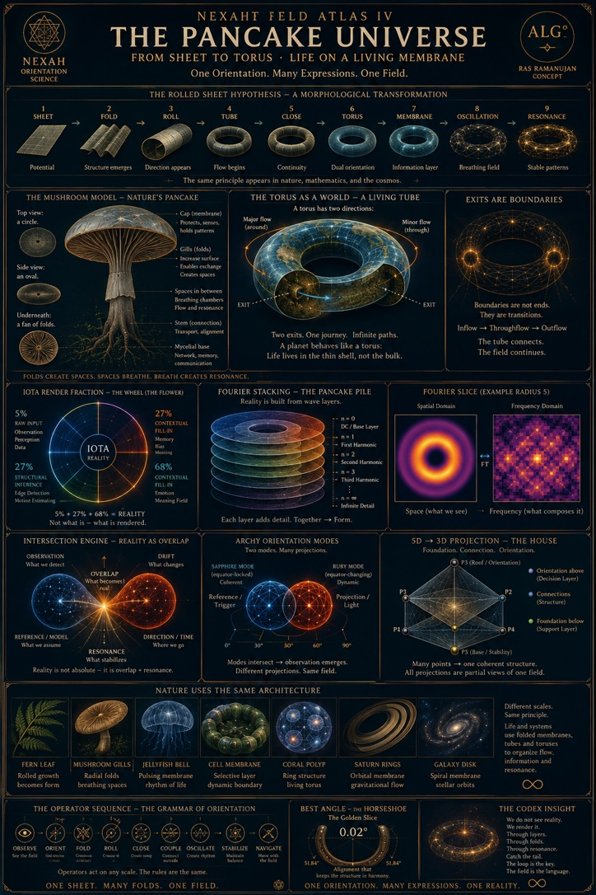

NEXAH · Number/View Suite · exact reflection arithmetic
Janus Arithmetic Ladder
Acht Ansichten einer getypten Architektur: affine Spiegelung, Koordinatencharts, ein nachvollziehbarer Curtain-Return, eine exakt geprüfte 204²-Pfadbilanz, ein provenance-erhaltender Packaging/Nexus-Return und eine ausdrücklich nicht-beweisende Modellgalerie. Gemeinsame Darstellung bedeutet keine gemeinsame Operatoridentität.
Two centers · two exact relations
Seven-state Janus ladder
Curtain · AM → VM → PM → Referenz-Return
Zwei Reihenfolgen werden im selben Janus-Instrument sichtbar geprüft. Der minimale Adapter hält den Integerträger während des Ansichtswechsels fest; die Driftkontrolle bricht diese Voraussetzung absichtlich.
WEG A · SEAM DANN JANUSJc(SΔ(x))Gegenwert
WEG B · JANUS DANN SEAMSΔ(Jc(x))Gegenwert
STAGEREFERENCE
REST0
A RETURN11357
B RETURN11357
PAIR11357↔12537
EXACT RETURN
Beide Wege treffen denselben Gegenwert und kehren exakt zur Referenz zurück.
Boundary: Der Null-Drift-Pass zeigt nur, dass ein scalar-erhaltender Curtain-Zyklus mit Jc(x)=2c−x kommutiert. Für Δ≠0 entsteht der Rest −2Δ; ohne Adapter lautet das Resultat NOT MAPPED. AM/VM/PM, Pink Diamond, Janus-Schalen und Residuen bleiben getrennte Typen. Kein Maschinenkern, keine neue Identität, Relation, Study, Finding oder physikalische Mechanismusbehauptung.
Carrier → centered address → chart → measurement‑T
Exact total · declared radial allocation
Galileo packing grammar · landmarks → shells → views
Diese Ansicht bindet die bereits vorhandene A0-Grammatik „From Landmarks to Packages“ ein. Experience ist die publizierte Spiegelung; A0 bleibt Source Authority.
Pₖ(n)=nᵏ · Δ₃(n)=n³−(n−1)³=3n²−3n+1
Σⱼ₌₁ⁿ Δ₃(j)=n³
Σⱼ₌₁ⁿ Δ₃(j)=n³
SQUARES1 · 4 · 9 · 16 · 25 · 36 · 49 · 64
CUBES / PACKAGES1 · 8 · 27 · 64 · 125
FOURTH POWERS1 · 16 · 81 · 256 · 625
Δ₃(1)1 · GOLDΔ₃(2)7 · GREENΔ₃(3)19 · BLUEΔ₃(4)37 · RED
Exact shell return: 1+7+19+37=64=4³. Die Farben sind ein View-Code der Kubikschalen, keine Primfamilie: 1 ist nicht prim und Δ₃(6)=91 ist zusammengesetzt.
SPATIALXY · YZ · ZXFIELDBITS · 33°/45° LENS · TERNARY 3+1CARRIERT⁴ → T³(q) PROJECTED STATE
Connector · cubic shells ↔ power landmarks ↔ octave/fifths
Eine vorhandene Zahlenschicht wird in eine deklarierte Tonhöhenansicht gelesen. Die Arithmetik bleibt Träger; das musikalische Raster ist eine View mit eigener Stimmung und eigener Rückkehrnaht.
EXACT · CARRIERΔ₃(1…4)=1,7,19,37
64=2⁶=4³=8²Im Pitch-Frequency-View gilt für die Oktave: f↦2f.BOUNDED · ADDRESS7=p₄ · 19=p₈ · 37=p₁₂
break: 61=p₁₈ · 91=7·13Die ersten drei Adressen bilden keinen allgemeinen Prim-/Ton-Satz.EXACT · FIFTHS RETURN(3/2)¹² / 2⁷
=531441/524288 ≠ 1Pythagorean comma ≈ 23.4600 cents.Typed boundary: 7+1 und 12+1 sind View-Konventionen nach Wahl eines Tonsystems. 2⁵ und 2⁷ fehlen nur in der angezeigten Schnittmenge der Potenz-Landmarks — nicht in der Arithmetik. Kein prime-to-tone theorem, keine universelle Harmonie und keine kulturelle Genealogie; historische Tonsysteme bleiben Kontext/HOLD. A0 · Octave / Successor / Fifths bridge.
Tessarec packaging return · same payload, typed ports
Die Verpackung transportiert einen exakten Payload durch verschiedene Charts. Sie verändert weder den Generator-Record noch macht sie aus einer Rollenbezeichnung einen neuen Operator.
GENERATOR A(12·17)²EXACT
GENERATOR B23³+24³+25³EXACT
PAYLOAD41,616PACKET
CUT / EXIT204 ≠ 216°SEPARATE
RETURNprovenance retainedLOSSLESS
23³+24³+25³ = 41,616 = 204² = (12·17)²
206²−204² = 820 = 41·20
41,616+26³ = 59,192
206²−204² = 820 = 41·20
41,616+26³ = 59,192
Declared doubling channel · C808 redline
101
202
404
808
1616
3232
Pₖ=101·2ᵏ, 0≤k≤5. C808 ist hier ein lokaler Channel-Marker, keine Naturkonstante. Der Scale-Lift ist nur bei gemeinsamer Skalierung von Raum und Cut exakt: 204/1000 = 2040/10000 = .204; 204/300=.68 gehört zu einem anderen Frame.
payload exit41,616 mod 360 = 216°
nexus-26 exit59,192 mod 360 = 152°
return sum exit100,808 mod 360 = 8°




Dünne Schicht → Faltung → 90°-Flip und Return
Pancake (Bild 2) zeigt die dünne Schicht im Ansichtswechsel. Rolled Sheet (Bild 1) zeigt Falten, Rollen und Schließen. Die Pilzlamellen veranschaulichen dabei die Falten und ihre Zwischenräume. 3+1 Flame (Bild 3) setzt den 90°-Flip als Schwelle und zeigt den Return als eigenen Schritt.
Die drei Tafeln sind visuelle Modelle. In der Formation Lens lässt sich der gemeinsame Parameter c von Mandelbrot- und Julia-Ansicht verfolgen. Formation Lens in A0 öffnen →

Gallery boundary: 0.02°, 51.84°, horseshoe, pancake, tube, membrane, expansion and contraction are model labels until an explicit map, unit and falsifiable operator contract is supplied. In particular 0.02° ≠ δ(0.2)=0.020204…. The Prime–Riemann transport poster is not admitted as a mathematical source here.
Shared power-landmark addresses
16=2⁴=4² · 25=5² · 27=3³ · 36=6² · 49=7² · 64=2⁶=4³. Diese Gleichheiten binden Number Line und Package View exakt. Eine 7+1-/Oktavlesung bleibt eine deklarierte View-Adressierung; ein akustisches Gesetz folgt daraus nicht.
Invariantdeclared midpoint, payload and provenance
Exact ledger41,616=204²; exit 216°
Representationline · oval · T · radial · packet · layers
Claim ceilingIhara nexus is a typed role; operator identity HOLD
Typed method bridge · Antipode Geometry
Janus liefert den exakten Gegenadress-Operator Jc(x)=2c−x; die Shells halten Mittelpunkt, Radius und Darstellungsschicht getrennt.
Audit boundary: „Janus“ bezeichnet hier ausschließlich eine explizite affine Spiegelung. Ähnliche Farben oder Formen übertragen weder empirische Evidenz noch Operatoridentität.